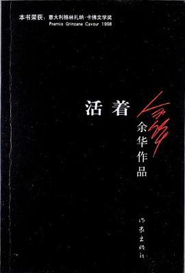
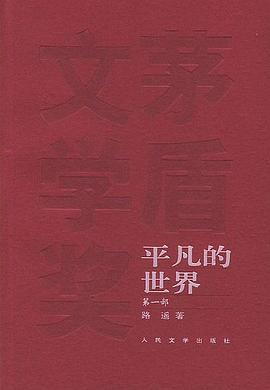

活着
《活着(新版)》讲述了农村人福贵悲惨的人生遭遇。福贵本是个阔少爷，可他嗜赌如命，终于赌光了家业，一贫如洗。他的父亲被他活活气死，母亲则在穷困中患了重病，福贵前去求药，却在途中被国民党抓去当壮丁。经过几番波折回到家里，才知道母亲早已去世，妻子家珍含辛茹苦地养大两个儿女。此后更加悲惨的命运一次又一次降临到福贵身上，他的妻子、儿女和孙子相继死去，最后只剩福贵和一头老牛相依为命，但老人依旧活着，仿佛比往日更加洒脱与坚强。

平凡的世界（全三部）
《平凡的世界》是一部现实主义小说，也是一部小说形式的家族史。作者浓缩了中国西北农村的历史变迁过程，在小说中全景式地表现了中国当代城乡的社会生活。在近十年的广阔背景下，通过复杂的矛盾纠葛，刻划社会各阶层众多普通人的形象。劳动与爱情，挫折与追求，痛苦与欢乐，日常生活与巨大社会冲突，纷繁地交织在一起，深刻地展示了普通人在大时代历史进程中所走过的艰难曲折的道路。

追风筝的人
12岁的阿富汗富家少爷阿米尔与仆人哈桑情同手足。然而，在一场风筝比赛后，发生了一件悲惨不堪的事，阿米尔为自己的懦弱感到自责和痛苦，逼走了哈桑，不久，自己也跟随父亲逃往美国。
成年后的阿米尔始终无法原谅自己当年对哈桑的背叛。为了赎罪，阿米尔再度踏上暌违二十多年的故乡，希望能为不幸的好友尽最后一点心力，却发现一个惊天谎言，儿时的噩梦再度重演，阿米尔该如何抉择？